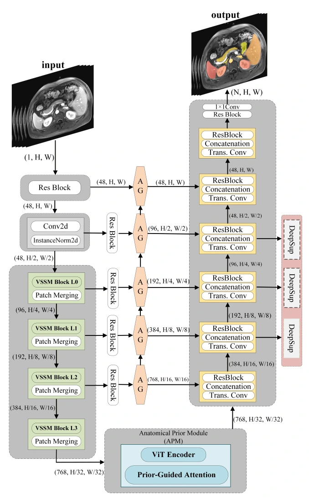

EMBC 2026Oral
AP-Mamba: Anatomy-Aware State Space Models for Multi-organ Abdominal MRI Segmentation
International Conference of the IEEE Engineering in Medicine and Biology Society (EMBC), 2026
An anatomy-aware state-space network that combines global organ-layout priors with attention-gated decoding for multi-organ abdominal MRI segmentation.

Key ideas
- Visual state-space backbone for efficient long-range context.
- Anatomical Prior Module encodes global organ layout and co-occurrence.
- Attention-gated skip connections refine boundaries and suppress background responses.
Evaluation
CHAOS-MRI with five-fold cross-validation, and AMOS-MRI with a held-out test set.